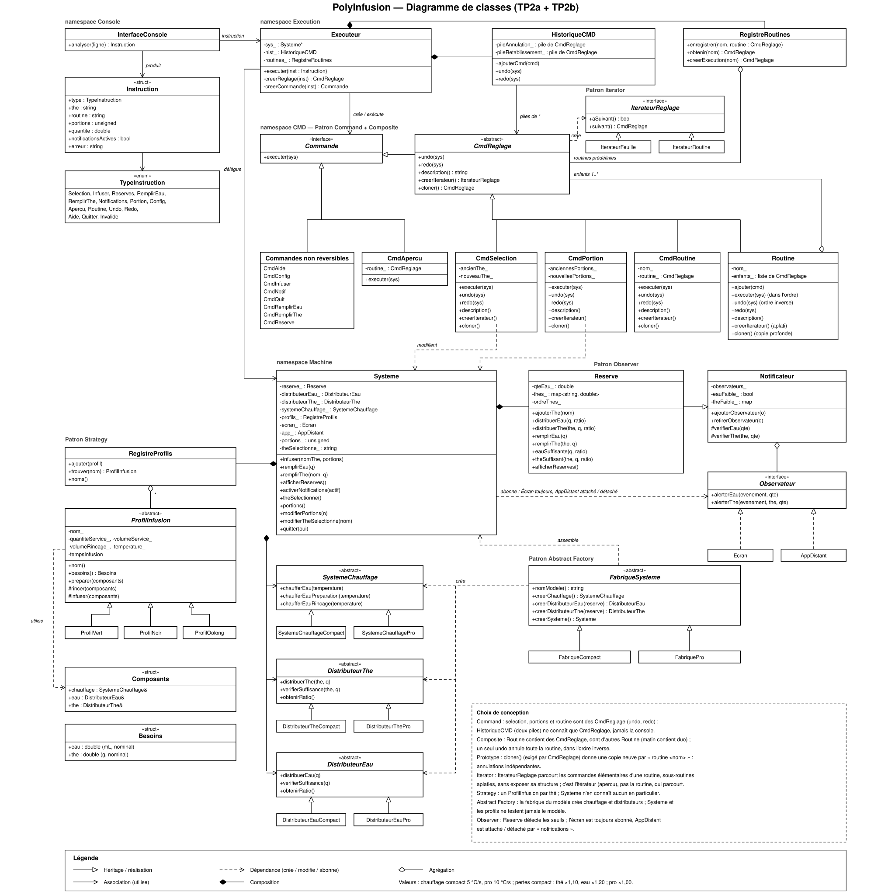

Diagram_corrige.puml.Le code est organisé en trois blocs qui se parlent peu : la console (InterfaceConsole transforme une ligne en Instruction), l'exécution (Executeur traduit l'instruction en commande et tient l'historique) et le système (Systeme et ses composants, qui font réellement le travail). Ajouter une instruction, un thé ou un modèle de machine se fait en ajoutant des classes, sans modifier celles qui existent.
| Patron | Problème rencontré | Classes |
|---|---|---|
| Strategy | Les trois thés se préparent avec les mêmes étapes mais des paramètres différents | ProfilInfusion, ProfilVert/Noir/Oolong, RegistreProfils |
| Abstract Factory | Compact et pro ont chacun une famille de composants qui vont ensemble | FabriqueSysteme, FabriqueCompact, FabriquePro |
| Observer | Alerter l'écran et l'application distante quand une réserve baisse ou remonte | Notificateur, Reserve, Observateur, Ecran, AppDistant |
| Command | Annuler / rétablir les réglages et découpler la console de ce qui est exécuté | Commande, CmdReglage, CmdSelection, CmdPortion, HistoriqueCMD, Executeur |
| Composite | Une routine doit s'exécuter et s'annuler comme un seul réglage, et une routine peut en contenir une autre | Routine, CmdRoutine, RegistreRoutines |
| Iterator | Lister les changements élémentaires d'une routine sans que la routine ne le fasse | IterateurReglage, IterateurFeuille, IterateurRoutine, CmdApercu |
| Prototype | Chaque exécution d'une routine doit avoir sa propre copie pour s'annuler indépendamment | CmdReglage::cloner() |
ProfilInfusion fixe cet enchaînement (méthode patron) et chaque thé n'apporte que ses valeurs. Systeme::infuser reçoit un nom de thé, le cherche dans RegistreProfils et appelle preparer : il ne contient aucun if sur le type de thé. Pour ajouter un thé, on écrit une sous-classe et on l'enregistre ; sa réserve est créée automatiquement et la console connaît son nom.FabriqueSysteme déclare la création de la famille complète et creerSysteme() l'assemble ; main ne choisit qu'une fabrique d'après l'argument compact ou pro. Il est impossible de mélanger un chauffage compact et un distributeur pro. Un troisième modèle n'est qu'une nouvelle fabrique avec ses trois composants. Les profils ne changent pas : ils parlent aux composants par l'interface Composants.Reserve hérite de Notificateur, qui détecte les passages sous le seuil (500 mL, 10 g) et le retour au-dessus, une seule fois par franchissement. Il avertit ses Observateur sans savoir qui ils sont. L'Ecran est toujours abonné ; l'AppDistant est abonné ou désabonné par la commande notifications. Ajouter un destinataire (courriel, journal) revient à hériter de Observateur sans toucher à la réserve.Commande avec executer(Systeme*) ; Executeur ne connaît que cette interface. Seuls les changements de réglage (thé sélectionné, portions, routine) peuvent être annulés : ils passent par CmdReglage, qui ajoute undo et redo. Ce choix est vérifié par le compilateur : HistoriqueCMD n'accepte que des CmdReglage, donc on ne peut pas y ranger par erreur un infuser ou un remplissage, qui ne sont pas réversibles. L'historique est formé de deux piles (annulation, rétablissement) ; une nouvelle opération vide la pile de rétablissement.Routine est un CmdReglage qui contient d'autres CmdReglage, y compris d'autres routines (matin contient duo). Elle s'exécute dans l'ordre, s'annule dans l'ordre inverse et se rétablit dans l'ordre : le client traite une routine comme un simple réglage et un seul undo suffit. CmdRoutine l'enrobe pour afficher « Routine appliquée : nom. ».apercu doit lister les changements élémentaires, même ceux des sous-routines. Ce n'est pas à la routine de le faire : creerIterateur() fournit un IterateurReglage et CmdApercu le parcourt avec aSuivant() / suivant(). IterateurFeuille renvoie son unique réglage ; IterateurRoutine parcourt ses enfants et leur demande leur propre itérateur, ce qui aplatit les niveaux sans que CmdApercu ne connaisse la structure.solo était la même instance à chaque fois, deux exécutions se mélangeraient dans l'historique. RegistreRoutines::creerExecution appelle donc cloner() (copie profonde) et exécute la copie.Systeme::infuser vérifie d'abord eau et thé pour l'ensemble, puis consomme : en cas de manque, rien n'est consommé (message « Aucune consommation effectuée. »).CmdReglage (le compilateur impose undo, redo, description, creerIterateur, cloner) ; une nouvelle routine s'enregistre dans RegistreRoutines.